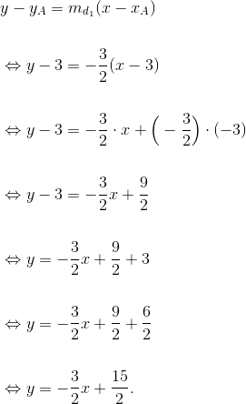
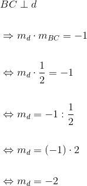
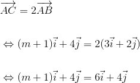
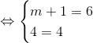

Exerciții și probleme rezolvate de tip Bac pentru profilul mate - info
- Această problemă a fost dată în sesiunea august - septembrie a anului 2012, pentru profilul matematică - informatică, la Subiectul I, exercițiul 5.
Bacalaureat Matematică 2012 | Mate - Info | Sesiunea august - septembrie | Subiectul I
Determinați ecuația dreptei care trece prin punctul  și este paralelă cu dreapta
și este paralelă cu dreapta  de ecuație
de ecuație  .
.
Notăm cu  dreapta căutată.
dreapta căutată.


Ecuația dreptei este:

- Această problemă a fost dată în sesiunea specială a anului 2012, pentru profilul matematică - informatică, la Subiectul I, exercițiul 5.
Bacalaureat Matematică 2012 | Mate - Info | Sesiunea specială | Subiectul I
Determinați numărul real  pentru care vectorii
pentru care vectorii  și
și  sunt coliniari.
sunt coliniari.
Cei doi vectori sunt coliniari, dacă și numai dacă are lor egalitatea: 
Atunci, avem că:


Pentru  cei doi vectori sunt coliniari.
cei doi vectori sunt coliniari.
- Această problemă a fost dată în sesiunea august - septembrie a anului 2013, pentru profilul matematică - informatică, la Subiectul I, exercițiul 5.
Bacalaureat Matematică 2013 | Mate - Info | Sesiunea august - septembrie | Subiectul I
Se consideră punctele  și
și  astfel încât
astfel încât  și
și  . Determinați lungimea vectorului
. Determinați lungimea vectorului 


 .
.
- Această problemă a fost dată în sesiunea specială a anului 2014, pentru profilul matematică - informatică, la Subiectul I, exercițiul 5.
Bacalaureat Matematică 2014 | Mate - Info | Sesiunea specială | Subiectul I
În reperul cartezian  se consideră punctele
se consideră punctele  ,
,  și
și  . Determinați ecuația dreptei
. Determinați ecuația dreptei  care trece prin
care trece prin  și este perpendiculară pe dreapta
și este perpendiculară pe dreapta  .
.
Ecuația dreptei este:

Rezultă că panta dreptei este 


- Această problemă a fost dată în sesiunea august - septembrie a anului 2014, pentru profilul matematică - informatică, la Subiectul I, exercițiul 5.
Bacalaureat Matematică 2014 | Mate - Info | Sesiunea august - septembrie | Subiectul I
În reperul cartezian  se consideră vectorii
se consideră vectorii  și
și  , unde
, unde  este număr real. Determinați numărul real știind că
este număr real. Determinați numărul real știind că  .
.




- Această problemă a fost dată în sesiunea iunie - iulie a anului 2014, pentru profilul matematică - informatică, la Subiectul I, exercițiul 5.
Bacalaureat Matematică 2014 | Mate - Info | Sesiunea iunie - iulie | Subiectul I
Se consideră triunghiul echilateral  cu
cu  . Calculați lungimea vectorului
. Calculați lungimea vectorului  .
.
În  avem
avem  .
.
Cum este echilateral, rezultă că  .
.

- Această problemă a fost dată în sesiunea august - septembrie a anului 2015, pentru profilul matematică - informatică, la Subiectul I, exercițiul 5.
Bacalaureat Matematică 2015 | Mate - Info | Sesiunea august - septembrie | Subiectul I
În reperul cartezian  se consideră punctul
se consideră punctul  Determinați ecuația dreptei care trece prin punctul
Determinați ecuația dreptei care trece prin punctul  și are panta egală cu
și are panta egală cu 
Ecuația dreptei determinată de punctul  și panta
și panta  este:
este:


Ecuația dreptei care să verifice cerințele este 
- Această problemă a fost dată în modelul de subiect al anului 2016, pentru profilul matematică - informatică, la Subiectul I, exercițiul 5.
Bacalaureat Matematică 2016 | Mate - Info | Model de subiect | Subiectul I
În reperul cartezian  se consideră punctele
se consideră punctele  și
și  Determinați ecuația dreptei care trece prin punctul
Determinați ecuația dreptei care trece prin punctul  și este paralelă cu mediana din
și este paralelă cu mediana din  a triunghiului
a triunghiului 
Fie  mijlocul segmentului
mijlocul segmentului ![\begin{align*} \left [ BC \right ], \end{align*}](https://media.liceunet.ro/files/webbooks/images/420/equations/fi6rJs0P_ACh7DCa7UUbuA==.gif) având coordonatele:
având coordonatele:

Fie dreapta 

 este mediana din a
este mediana din a 
Ecuația medianei este:

Avem:

 .
.
Dacă îți dorești să vezi și să rezolvi și alte probleme de tip Bac în care apar elemente de geometrie, te sfătuim să accesezi unul dintre eBook-urile următoare, Subiectul I, problema 5:
Bacalaureat Matematică 2012 | Mate - Info | Model de subiect | Subiectul I
Bacalaureat Matematică 2012 | Mate - Info | Sesiunea iunie - iulie | Subiectul I
Bacalaureat Matematică 2013 | Mate - Info | Model de subiect | Subiectul I
Bacalaureat Matematică 2013 | Mate - Info | Sesiunea iunie - iulie | Subiectul I
Bacalaureat Matematică 2013 | Mate - Info | Sesiunea specială | Subiectul I
Bacalaureat Matematică 2014 | Mate - Info | Model de subiect | Subiectul I
Bacalaureat Matematică 2015 | Mate - Info | Sesiunea iunie - iulie | Subiectul I
Bacalaureat Matematică 2015 | Mate - Info | Sesiunea specială | Subiectul I